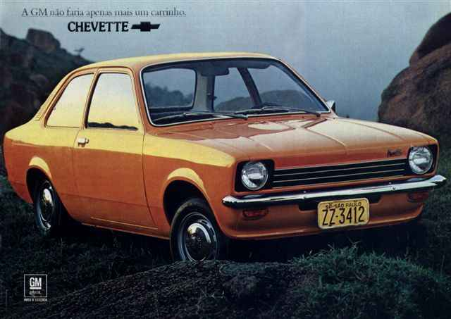
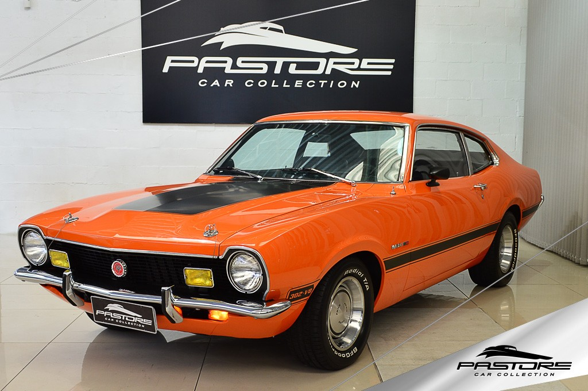

Lasanha pode ser definido como todo e qualquer carro véio, acabado, cheio de problemas, mas que você olha e diz: "Hummm isso ficaria lindo na minha garagem..."
Por isso, hoje estamos reunindo uma listagem das melhores (ou piores) lasanhas para se ter a (in)felicidade de ser dono no Brasil!
Favorito da gurizada mais nova, o sonho do Chevette turbinado já passou na cabeça de praticamente todos nós em algum momento. O carro que tem valorizado muito nos últimos anos devido a sua alta procura, foi fabricado pela GM no Brasil de 1973 a 1995.
Tração traseira, é o carro de projeto perfeito para quem busca se divertir no fim de semana saindo de lado nas curvas e nas rótulas. De baixo custo de manutenção, fácil customização e diversas opções para escolher.
Pioneiro dos muscle-cars brasileiros, o Maverick (o antigo, a versão boa) foi fabricada de 1973 a 1979 e contava com motores 4I, 6I e V8, com litragens consideradas absurdas hoje em dia.
Não tão popular quanto o Chevette, é um carro pra quem gosta de chamar atenção por onde passa. Reúne fãs até os dias atuais, principalmente pelo famoso v-oitão exclusivo da Ford. Possui alto custo de manutenção e valorizou muito nos últimos anos.
Uma das primeiras gerações da gigante alemã a vir oficialmente para o Brasil, as BMW E36 (também conhecidas carinhosamnete como resto de rico) são carros que nunca desvalorizaram. Apesar de já estarem em seus 30 anos, os modelos mais luxuosos da Series 3 podem ser encontrados acima de 50 mil reais.
Possuem manutenção cara, poucas peças no Brasil e difícil reposição, mas são de longe os carros mais luxuosos de "baixo custo" da sua época, além de também contar com tração traseira e modelos com motores 1.8, 2.0, 2.3, 2.5 e 2.8, em 4 ou 6 cilindros em linha.